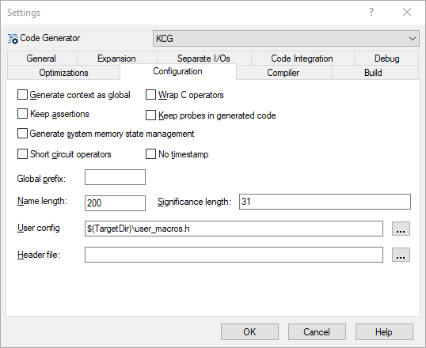

Copy properties#
Rationale#
Some software projects are composed of dozens of interconnected SCADE models. Maintaining a consistent set of settings across all projects is important, to ensure homogeneous code generation parameters or modeling rules. However, performing this maintenance by hand can be cumbersome and error-prone.
Description#
This sub-command copies a selection of tool properties from a reference project to targets projects. The properties are propagated for all the configurations where they appear in the reference project. A configuration is created in the target project if needed.
The properties to consider should be specified in a configuration file (JSON):
keys: Identifiers of the tools.
values: Identifiers of the properties.
When a property designates a file that can be relative to the project, prefix its identifier with
@.
Note
A tool property is saved in a project file with the name
@<tool>:<property>and has a list of values. It is optionally linked to a configuration.Properties with default values are not stored in the project files.
The identifiers used to store properties in a project file are not documented. To find the identifiers, tool and property, corresponding to a given setting, you can compare the project files before and after modifying this single setting. This may lead to the creation of a new property if you override the default, or the deletion of a property if you restore its default value.
For example, the following schema corresponds to the Configuration settings of KCG:

{
"GENERATOR": [
"GLOBAL_ROOT_CONTEXT",
"WRAP_C_OPS",
"MACRO_ON_ASSERT",
"PROBES",
"STATE_VECTOR",
"NO_BITWISE",
"NO_TIMESTAMP",
"GLOBALS_PREFIX",
"NAME_LENGTH",
"SIGNIFICANCE_LENGTH",
"@USER_CONFIG",
"@HEADER",
]
}
Usage#
usage: ansys_scade_ps_copy_properties [-h] -r <reference> -s <schema> -p <project> [<project> ...]
Ansys SCADE Power Scripts: Copy SCADE project properties
options:
-h, --help show this help message and exit
-r <reference>, --reference <reference>
reference project (ETP)
-s <schema>, --schema <schema>
input schema file (JSON)
-p <project> [<project> ...], --projects <project> [<project> ...]
project files to update (ETP)
For example:
ansys_scade_ps_copy_properties -r Reference.etp -s MySchema.json -p P1.etp P2.etp
Resources#
The next sections present the properties for the most popular SCADE tools.
The corresponding schemas, to be considered as templates for your own configurations,
are delivered with the package’s sources, <python>/Lib/site-packages/ansys/scade/ps/copy_properties/res directory.
Each section mentions the name of the resource template and lists
all the contained properties, as they appear in the IDE, with the
Project/<tool>/Settings... command.
Alternative#
There are use cases where ansys_scade_ps_copy_properties is not suitable.
For example:
Dynamic properties: set the Code Generator target directory to
../code/<model name>.Review: use a text editor to review the reference project instead of the SCADE IDE.
You can set the properties of a project programmatically. The following example sets a few properties for one configuration:
from pathlib import Path
from scade.model.project.stdproject import Project, get_roots as get_projects
from ansys.scade.apitools.create import create_configuration, save_project
for project in get_projects():
configuration = project.find_configuration('KCG')
# make sure the configuration exists
if not configuration:
configuration = create_configuration(project, 'KCG')
# set a scalar property based on the project's name
base_name = Path(project.pathname).stem
DEFAULT_TARGET_DIR = '' # this is not the exact default value, it does not matter here
project.set_scalar_tool_prop_def(
'GENERATOR',
'TARGET_DIR',
f'../code/{base_name}',
DEFAULT_TARGET_DIR,
configuration,
)
# set a boolean property
DEFAULT_DEBUG = False
project.set_bool_tool_prop_def('GENERATOR', 'DEBUG', False, DEFAULT_DEBUG, configuration)
# set a regular property: list of values
extensions = ['SdyChecker', 'SnapshotApi']
project.set_tool_prop_def('GENERATOR', 'OTHER_EXTENSIONS', extensions, [], configuration)
# save the project
save_project(project)
Usage: scade.exe -script <script> <project>+
Note
It is not necessary to consider the exact default value of the properties you want to set. When you provide a default different from your value, the property is always created or updated. The only impact is a larger project file size when explicitly adding properties with default values.